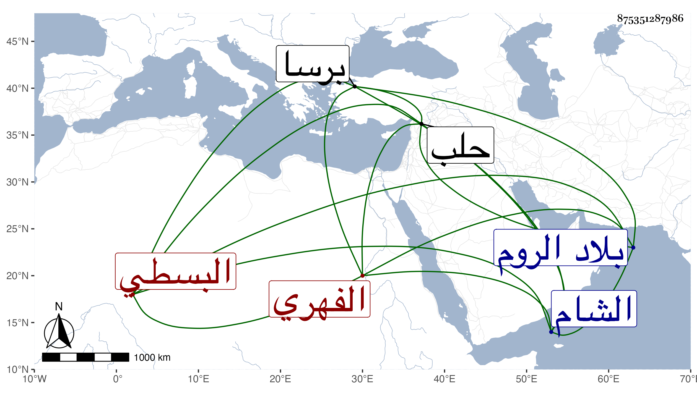

0902Sakhawi.DawLamic.ITO20230111-ara1.EIS1600.875351287986
Biography ID: 875351287986
919
علي بن عيسى بن محمد العلاء أبو الحسن بن أبي مهدي الفهري البسطي . ذكره شيخنا في إنبائه وقال انه اشتغل ببلاده ثم حج ودخل الشام ونزل بحلب على قاضيها الجمال النحريري وأقرأ التسهيل وعمل المواعيد بالجامع ، وكان فاضلا ذكيا أديبا يذكر في المجلس نحو سبعمائة سطر يرتبها أولا في يوم الأربعاء ثم ينظرها يوم الخميس ثم يلقيها يوم الجمعة سردا يطرزها بفوائد ومناسبات . قاله البرهاني المحدث وذكر أنه أنشده ابن الجباب الغرناطي اللغز الشهير في المسك :
| كتبتم رموزا ولم تكتبوا | كهذا الذي سبيله واضحة |
قال : وأنشدنا عنه أناشيد ، ثم دخل الروم فسكنها وعظم قدره ببرصا وحصلت له ثروة ثم دخل القرم وكثر ماله . واستمر هناك حتى مات في سنة تسع عشرة . ذكره ابن خطيب الناصرية وغيره وهو ممن ذكره شيخنا في الدر سهوا فليس من شرطه .
